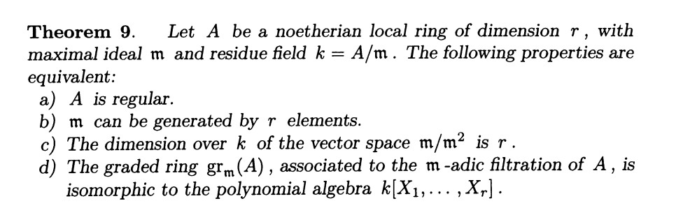
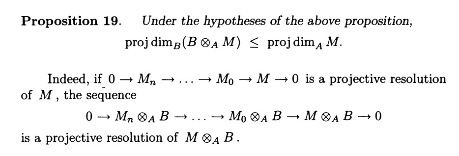
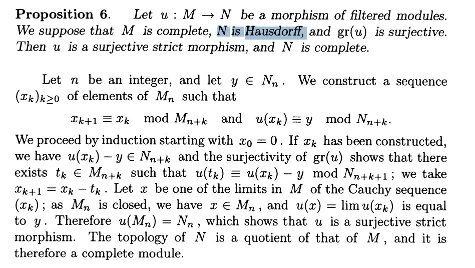
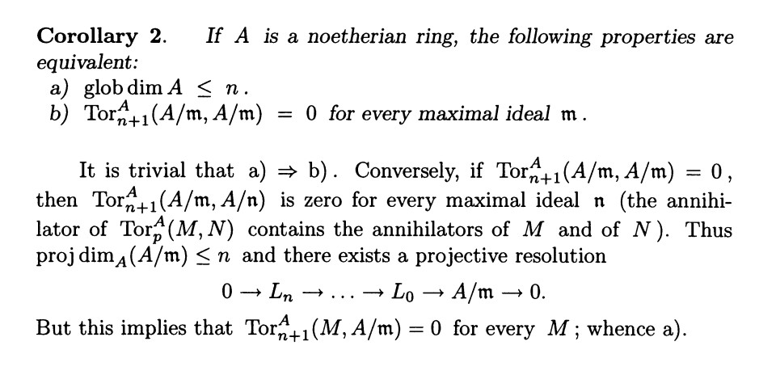

第二次代数几何讨论班的准备
虽然已经结束了()
扔上来总是没问题()

从 2 开始说? setting 就是 $A$ 是一个有限 global dimension 的 Noetherian local ring. 我们考虑 ${x_1,\cdots,x_p}$ 作为 $\mathfrak{m}$ 的一组生成元 (regular system of parameters of $A$), 然后, 根据前文我们有他是 $A$-sequence.
Nakayama(或者通过上节课的内容)告诉我们, 实际上这说的就是 ${x_i}$ 构成了 $\mathfrak{m}/\mathfrak{m}^2$ 的一组 $k$-basis.
Proposition 22: ${x_1,\cdots,x_p}$ 是 $\mathfrak{m}$ 的 $p$ elements, TFAE:
a) $x_1,\cdots,x_p$ is a subset of a regular system of parameters of $A$.
b) The image of $x_1,\cdots,x_p$ in $\mathfrak{m}/\mathfrak{m}^2$ are linearly independent over $k$.
(a) 和 (b) 等价是显然的
c) The local ring $A/(x_1,\cdots,x_p)$ is regular, and has $\dim=\dim A-p$.
\[0\to \mathfrak{p}/\mathfrak{p}\cap \mathfrak{m}^2\to \mathfrak{m}/\mathfrak{m}^2\to \mathfrak{n}/\mathfrak{n}^2\to 0.\]
with $\mathfrak{p}=(x_1,\cdots,x_p)$. 于是
\[(b)\iff [\mathfrak{p}/\mathfrak{p}\cap \mathfrak{m}^2:k]=p\iff [\mathfrak{n}/\mathfrak{n}^2:k]=\dim A-p\]
(需要详细说明!)
然后就说完了.
而 $(c)\to (b)$ side, by Thm 9,
$A/\mathfrak{p}$ regular $\implies [\mathfrak{n}/\mathfrak{n}^2:k]=\dim A/\mathfrak{p}$, 而根据上面那个 s.e.s, $\dim A/\mathfrak{p}=\dim A-p$ 等价于 $(b)$.
(regular ring 都是 normal 的, in particular, noetherian domain. 因此 $\mathfrak{p}$ prime).
Cor: If $\mathfrak{p}$ an ideal of a regular, TFAE:
a) $A/\mathfrak{p}$ regular local ring,
b) $\mathfrak{p}$ generated by a subset of a regular system of parameters of $A$.
(b) $\implies$ (a) direct by prop.
考虑 $\mathfrak{n}=\mathfrak{m}/\mathfrak{p}$,
\[0\to \mathfrak{p}/\mathfrak{p}\cap \mathfrak{m}^2\to \mathfrak{m}/\mathfrak{m}^2\to \mathfrak{n}/\mathfrak{n}^2\to 0.\]
如果 regular, $[\mathfrak{n}/\mathfrak{n}^2:k]=\dim A/\mathfrak{p}$, 于是, $[\mathfrak{p}/\mathfrak{p}\cap \mathfrak{m}^2]=\operatorname{ht}_A\mathfrak{p}$. (why?)
take $x_1\cdots x_p$ $\mathfrak{p}/\mathfrak{p}\cap \mathfrak{m}^2$ 的一组基, 于是, $(x_1,\cdots,x_p)\subset \mathfrak{p}$ prime and of height $p=\operatorname{ht}_A\mathfrak{p}$, 于是 $\mathfrak{p}=(x_1,\cdots,x_p)$.
Prop 23: $\mathfrak{p}$ prime ideal of regular ring $A$, then $A_{\mathfrak{p}}$ is regular.
$\operatorname{glob}\dim A_{\mathfrak{p}}\leq \operatorname{glob}\dim A<\infty.$

Prop 24: $\hat{A}$ completion of local ring $A$ for the $\mathfrak{m}$-adic topology, we have the equivalences:
\[A\text{ regular}\iff \hat{A}\text{ regular.}\]
这个 follows from $\hat{A}\simeq \varprojlim M/\mathfrak{m}^nA$, with
\[\hat{A}_n=\ker(\hat{A}\to A/\mathfrak{m}^nA).\]
于是, $\operatorname{gr}(A)=\operatorname{gr}(\hat{A}).$
Thm 10: $A$ complete local ring. $k=A/\mathfrak{m}$ have the same char. TFAE:
a) $A$ regular of dim $n$.
b) $A$ isom. to the formal power series ring $k[[X_1,\cdots,X_n]]$.
有, $b)\implies a)$ by regular 的d) 等价条件, 他的 gr 是 polynomial alg. $k[X_1,\cdots,X_r]$.
$a)\implies b)$ by Cohen's thm, 对于 complete local ring $A$, 存在 $k'\subset A$, $k'\overset{\sim,A\to k}{\to} k$.
然后考虑 regular system ${x_1,\cdots,x_n}$, 有
\[k'[X_1,\cdots,X_n]\to A\]
于是 induces 了 $k'[[X_1,\cdots,X_n]]\to A$. 他是 inj 的 (一大段argument)
然后, 根据 Prop 6, 由于 $gr\phi$ 是 surj, $\phi$ 也是 surj.

于是 $\phi $ isom.
"It follows from the above that", 一个 ring 是 regular ring 当且仅当对任意 $\mathfrak{m}$, $A_\mathfrak{m}$ local regular ring.

以及
\[\dim A=\operatorname{glob}\dim A.\]
Prop 25: $A$ regular, $A[X]$ ring of polynomial with coeff in $A$, then, $A[X]$ is regular and
\[\operatorname{glob}\dim A[X]=\operatorname{glob}\dim A+1.\]
Lemma 1: $M$ $A[X]$-mod, then
\[\operatorname{proj}\dim_{A[X]}(M)\leq \operatorname{proj}\dim_{A}(M)+1.\]
首先, 对于 $M=A[X]\otimes N$, 由于 $A[X]$ $A$-flat, 有 $\operatorname{proj}\dim_{A[X]}N[X]\leq \operatorname{proj}\dim_{A}M.$ Moreover, clear that $\operatorname{proj}\dim_{A}N=\operatorname{proj}\dim_{A}M$.
一个 $A[X]$ 从某种意义上来说就是, 一个 $A$-mod $M$, equipped with 一个 $A$-morph $X:M\to M$.
于是, 诱导了 surj $M[X]\to M$. 根据一个过于容易的 degree 的 argument, 我们可以得到他的 ker,
\[\psi:X^i\otimes m_i\mapsto X^{i+1}\otimes m_i-X^{i}\otimes Xm_i.\]
然后就可以根据那个长正合列搞出来 $\operatorname{proj}\dim_{A[X]}M\leq \operatorname{proj}\dim_{A}M+1$. 从而 $A[X]$ 确实是 regular 的.
然后我们想 show that $\operatorname{glob}\dim A[X]\geq \operatorname{glob}\dim A+1$. 取 $\mathfrak{m}$ prime ideal of $A$, s.t. $ht_A\mathfrak{m}=\dim A=glob\dim A$. 那么, 考虑 $(\mathfrak{m}[X],X)$, 实际上 $(\mathfrak{m}[X],X)$ 就是一个素理想 (因为 $A[X]/(\mathfrak{m}[X],X)=A/\mathfrak{m}$). 但有
\[(\mathfrak{m}[X],X)\supset \mathfrak{m}[X] \supset\cdots\supset awa\]
打到这里就比较ez了.
Corollary: $k$ field, then $k[X_1,\cdots,X_n]$ regular.
Remark: 对于 $A=k[X_1,\cdots,X_n]/\frak{a}$, $\frak{a}$ ideal. $X$ corresponding affine var. One says $X$ is nonsingular if $A$ regular. when $k$ perfect i.e. field such that every algebraic extension is separable, TFAE:
-
$X$ nonsingular;
-
$X$ smooth over $k$;
-
$k'\otimes_k A$ is regular for every extension $k'$ of $k$.
Bourbaki buhui kk
赛尔 赛尔
用热血写下我们的骄傲